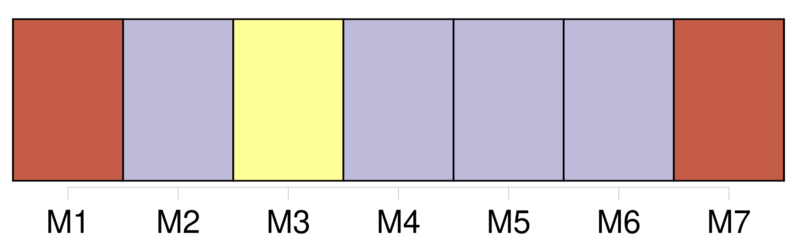
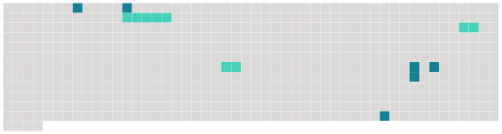

Longueur nb maillons : 9 mentions |
 |
Après avoir sorti de l'oubli « [son] » vieux château, [Pierrot] , le troubadour amoureux des belles pierres, le mélomane à la cornemuse, maestro des organisations dantesques, a décidé de faire revivre pendant quelques jours la vie domestique de ce moyen âge qui surprend souvent et émerveille toujours.
En 2001, le foyer rural, fief [du seigneur « Walter »] , a organisé pendant sept journées une fête médiévale inédite dans le Territoire de Belfort avec l'ambition de la renouveler tous les deux ans.
L'édition 2003, prévue en juin prochain, promet d'être plus belle que celle de 2001, avec des décors et des costumes encore plus nombreux et toujours ce désir de se rapprocher un peu plus de la réalité, particularité des puristes dont fait partie à n'en plus douter [Pierre Walter] [7 phrases]
« On y mangera avec les mains et on s'essuiera après la nappe », annonce [Pierre Walter] devant une salle qui éclate de rire. « C'est pas une blague », continue [Pierrot] devant [ses] amis incrédules. [1 phrases]
On servira le repas sur une tranche de pain noir rassis, comme au moyen âge, et encore, chez les bourgeois », précise-t [-il] [6 phrases] Pour tout renseignement complémentaire ou si vous désirez rejoindre la troupe de [Pierrot] et faire partie de cette formidable aventure, téléphoner au foyer rural au 03. |
 |
Il est possible de télécharger la ressource sur la page Ortolang |
Si vous avez des questions ou vous voyez des erreurs, merci d'envoyer un mail à silvia.federzoni89@gmail.com |